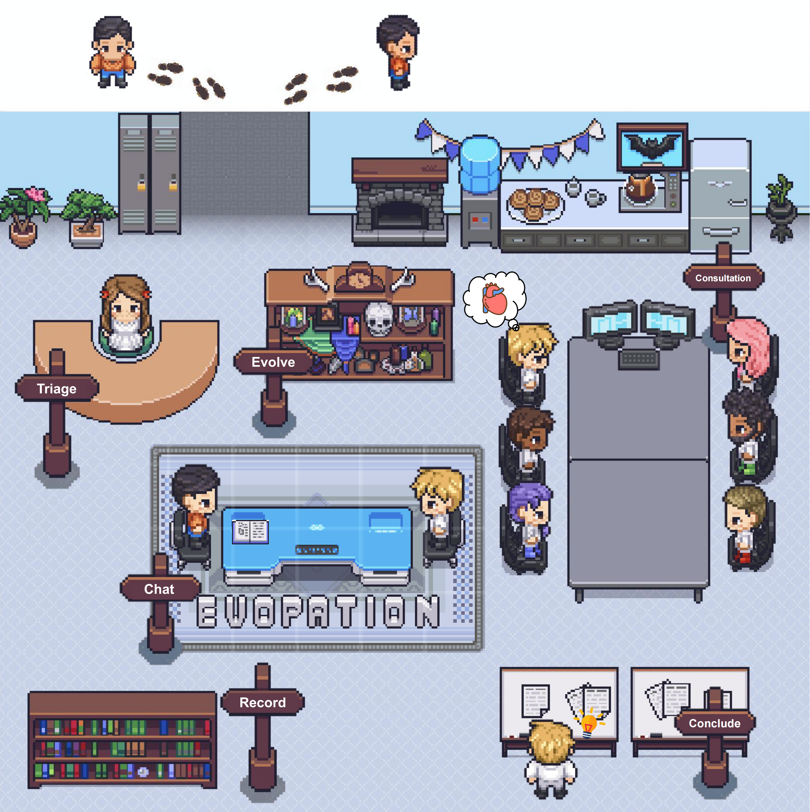
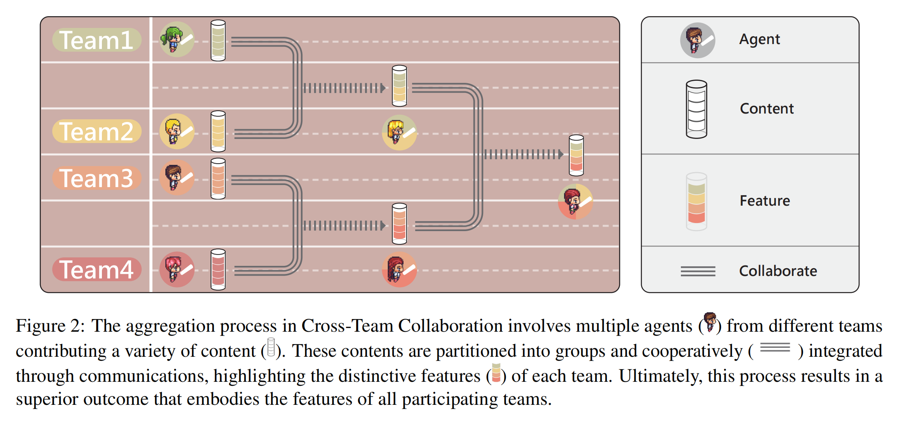

About Me
I am an incoming Ph.D. student at HKUST and currently a third-year M.Eng. student in Data Science at Zhejiang University, advised by Prof. Wei Chen at ZJUVAI. I received my B.Eng. in Computer Science from Jinan University.
Previously, I was a research assistant at THUNLP, Tsinghua University, working with Prof. Zhiyuan Liu and Prof. Chen Qian. I also worked as a research intern at Alibaba Group and a Talent Program intern at ByteDance.
I hope to build machine-native AI agents that develop or learn their own representations, communication protocols, coordination structures, and self-improvement mechanisms.
I am seeking research internship opportunities and welcome research collaborations. Contact me · Book a chat.
Research Interests
- Multi-agent collaboration: latent-space communication and reasoning, learned coordination.
- Agent evolution and evaluation: recursive self-improvement, interaction-driven learning, autonomous evaluation, and user simulation.
- Foundation models: model training, post-training, and novel architectures.
Posts
- Engineering Self-Improving Agents: From Context to Harness Evolution
- Interlat: Enabling Agents to Communicate Entirely in Latent Space
- Faithful LLM User Simulation: Closing the Gap Between Synthetic Users and Real People
More posts (6)
- Darwin Gödel Machine: Open-Ended Evolution of Self-Improving Agents
- Latent Space: From Continuous Reasoning to Representation Analysis
- Training Large Language Models to Reason in a Continuous Latent Space
- Agents from Google: A Systems View of Models, Tools, and Orchestration
- Long-Horizon Agents Need Long-Lived State, Not Just Long Context
- Optimizing Outcomes, Not Replies: Multi-Turn Post-Training for LLM Agents
Talks
Selected Publications
 ACL 2026Association for Computational Linguistics (ACL), 2026
ACL 2026Association for Computational Linguistics (ACL), 2026

ACL 2025Association for Computational Linguistics (ACL), 2025

Findings 2025Findings of the Association for Computational Linguistics (ACL Findings), 2025
* denotes equal contribution.
More publications (6)
- Learning to Evolve: A Self-Improving Framework for Multi-Agent Systems via Textual Parameter Graph OptimizationFindings of the Association for Computational Linguistics (ACL Findings), 2026
- MemCoRL: Alternating Co-Optimization of Memory Retrieval and Utilization via Collaborative Reinforcement LearningAssociation for Computational Linguistics (ACL), 2026
- International Conference on Learning Representations (ICLR), 2025
- Conference on Neural Information Processing Systems (NeurIPS), 2024
Experience
- Built the team's first data-flywheel rollout system for multi-turn, task-oriented dialogue, supporting downstream multi-turn dialogue RL and agentic RL.
- Designed a self-play simulation and evaluation environment with high-fidelity, persona-conditioned user-simulation agents for rollout generation and evaluation signals.
- Conducted post-training and preference alignment of large-scale LLMs (e.g., Qwen3.5-122B/397B) using SFT and RLHF/DPO, alongside autonomous agent-driven evaluation of dialogue policies.
- Proposed Interlat (code), a latent-space communication framework that replaces natural-language message passing with temporally aligned hidden-state exchange.
- Designed a token-latent curriculum and learned compression scheme, achieving up to 24x communication speedup at comparable task performance.
- Gained hands-on experience with distributed training on 256+ GPUs; co-authored Online-PVLM, MemCoRL, and Learning to Evolve.
- Led EvoPatient (code), an open-source doctor-patient coevolution system for virtual standardized patients, accepted to ACL 2025.
- Drove the project end-to-end, including research formulation, system implementation, medical-case curation, expert evaluation, and paper writing.
- Improved patient-answer ability from 0.763 to 0.860 after 200 training cases.

- Worked with Prof. Zhiyuan Liu and Prof. Chen Qian on ChatDev-based multi-agent collaboration, studying role organization, information exchange, and coordination.
- Led Croto (code), designing cross-team orchestration with parallel teams, hierarchy partitioning, and greedy aggregation for multi-agent software development.
- Contributed to MACNet (code) and iAgent (code); related OpenBMB/ChatDev projects have accumulated over 33k GitHub stars.
Awards and Honors
- 2026: Outstanding Graduate Student.
- 2025: National Scholarship (awarded to ∼2% of master’s students nationwide annually); Outstanding Graduate Student.
- 2024: First-Class Scholarship for Outstanding Graduates.
- Undergraduate: Three undergraduate scholarships.
Academic Service
- Reviewer: NeurIPS 2025, ICLR 2026.
Miscellaneous
Beyond research, I enjoy soccer, fencing, snowboarding, billiards, ballroom dancing, piano, photography, and physics.
Last updated: October 15, 2026
Layout inspired by Minimal Light.